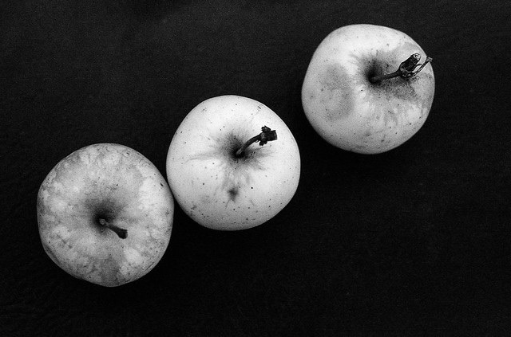

620 胶卷停产 31 年后，2026 年又多了一卷：20.99 美元，是 120 的 2.5 倍
2026 年 9 月 22 日，美国胶片店 FPP 上架了一卷新胶片：Harman Phoenix 125 的 620 版本，一卷 20.99 美元。而同一卷乳剂的 120 版本，在同一家店只卖 8.49 美元。 620 这个规格，柯达 1932 年推出、1995 年停产；今天货架上还能买到它，靠的全是「有人把 120 拆开、重新卷到 620 的轴上」。所以这篇先讲清三件事：620 到底是什么、2026 年还剩哪些 620、以及那 2.5 倍差价到底买的是什么。
一、620 不是另一种胶片，它就是 120
先把最容易搞错的一条讲掉：620 和 120 是同一卷胶片。同宽、同长、背纸基本一样，连背纸上画幅计数的位置都对得上 —— 唯一的差别是那根轴：620 的轴芯和两端法兰盘更小，卷轴孔也更小。 这个「小一圈」不是装饰，它直接决定相机能不能装进去：620 相机塞不下 120 的轴，而 120 相机装 620 的轴会打滑。所以 620 从来不是「更好的胶片」，它是柯达为了让当时的廉价相机只能用自家胶卷做出来的一个物理限制。
名字里的「6」原本指一卷 6 张，柯达正式上市时已经改成 8 张；标准画幅 6×9 cm，但和 120 一样，很多相机用它拍 6×6、6×4.5。620 的规格还进过 ISO 732 的 1982 年版，而 1991 年之后的版本把这个规格删掉了。
那「620 停产」到底停掉了什么？停掉的是柯达 1995 年不再生产这个规格。据相机维基（camera-wiki）的 620 条目：截至 2024 年，全世界还在工厂里生产 620 的只剩一家 —— 中国上海剑诚，品牌写「上海」；其余所有 620，都是第三方把 120 重卷出来的。 这句话就是理解价格的钥匙：你今天买到的 620，绝大多数不是「厂里做的胶片」，而是「人手换过轴的 120」。
二、2026 年货架上的 620：14 个单品，价格只有两档
2026 年 10 月 18 日，我们扒了 FPP 美国店的整份商品表（新上架的这卷见 Phoenix 125 的 620 商品页）：620 格式在架 14 个单品（另有 4 卷装的伊尔福黑白礼盒）。价格整齐得反常：
| 620 单品（FPP 美国店） | 类型 | 620 单卷价 | 上架日 |
|---|---|---|---|
| FPP Mummy 400 | 黑白 | $15.99 | 2022-08-09 |
| Ilford HP5 Plus 400 | 黑白 | $18.99 | 2024-02-24 |
| Ilford Delta 400 | 黑白 | $18.99 | 2024-02-24 |
| FPP X-Ray | 黑白 | $15.99 | 2025-02-18 |
| Ilford Kentmere 100 | 黑白 | $18.99 | 2025-02-20 |
| Ilford XP2 Super 400 | 黑白（C-41） | $18.99 | 2025-02-20 |
| Kodak Gold 200 | 彩色 | $20.99 | 2023-09-10 |
| Kodak Portra 800 | 彩色 | $24.99 | 2023-10-11 |
| Harman Phoenix II 200 | 彩色 | $20.99 | 2026-01-13 |
| Harman Switch AZURE | 彩色 | $20.99 | 2026-03-05 |
| Kodak Ektacolor Pro 160 | 彩色 | $20.99 | 2026-04-10 |
| Kodak EktaPan 100（标题写 Color，实为黑白） | 彩色 | $20.99 | 2026-06-16 |
| Lucky C200 | 彩色 | $20.99 | 2026-07-22 |
| Harman Phoenix 125 | 彩色 | $20.99 | 2026-09-22 |
两档价：黑白 $15.99–18.99，彩色基本一口价 $20.99（Portra 800 例外，$24.99）。 ⚠️ 这个「一口价」非常说明问题：Gold 200 和 EktaPan 100、AZURE 和 Lucky C200，胶片本身的成本差得很远，620 的价却几乎一样 —— 说明它定价的不是胶卷，是那道手工工序。连店家自己都把 EktaPan 100（黑白）的标题写成「620 Color Film」，而价格照样落在彩色那档。
三、2.5 倍差在哪：把 120 和 620 摆进一张表
要证明上面那个判断，最干净的做法是同一家店、同一货币、同一乳剂做对照，把渠道噪音全剔掉：
| 同一卷乳剂 | 120 单卷 | 620 单卷 | 620 贵多少 |
|---|---|---|---|
| Harman Phoenix 125 | $8.49 | $20.99 | 2.47 倍 |
| Harman Phoenix II 200 | $9.99 | $20.99 | 2.10 倍 |
| Harman Switch AZURE | $9.99 | $20.99 | 2.10 倍 |
| Kodak Ektacolor Pro 160 | $12.99 | $20.99 | 1.62 倍 |
| Lucky C200 | $14.99 | $20.99 | 1.40 倍 |
| Ilford Kentmere 100 | $6.99 | $18.99 | 2.72 倍 |
| Kodak Portra 800 | $17.00（5 卷装折算） | $24.99 | 1.47 倍 |
规律很清楚：越便宜的卷，被重卷之后溢价越夸张 —— Kentmere 100 差 2.72 倍，Portra 800 只差 1.47 倍。因为人工费是固定的，便宜的卷撑不住它。
再把张数算进去，差价就更直观了。⚠️ 张数由相机决定，不由胶卷决定（FPP 页面原话是 number of exposures determined by your camera），所以下面每一档都要按你那台相机的画幅去对：
不过这样比并不公平：6×6 的单张底片面积比 135 大约 3.6 倍（按 56×56 mm 对 24×36 mm 折算）。折成单位面积再算一遍：620 每平方毫米仍然是 135 的约 1.7 倍 —— 也就是说，把画幅的优势全算进去，620 也没在任何一边便宜过。
四、Phoenix 125 本身：两家店，两种说法
胶卷这边也有一处必须摊开讲的口径冲突。Harman 官网（harmantechnology.com 与 ilfordphoto.com）本轮全部返回 403，官方一手页打不开，只能看零售商的转述 —— 而两家说法并不一致：
| 说法 | 出处 | 判读 |
|---|---|---|
| 「tweaked the formulation and adjusted the speed to reflect how you liked to shoot it」，同时保留原有特性 | Analogue Wonderland 商品页（2026-08-20 上架） | ✅ 与「只是把速度定到 125」一致 |
| 「NEW 2026 Emulsion（全新 2026 乳剂）」 | FPP 35mm 商品页（2026-09-22 上架） | ⚠️ 零售口径，与上一条冲突 |
| 同一页规格行写「ISO 200」，正文写「new 125 DX-coded ISO」 | FPP 35mm 商品页 | ❌ 页面笔误，不作口径 |
怎么判：取「更具体、并且和厂商自己的宣传语对得上」的那一份。Harman 给这卷的 slogan 是 We changed the speed, not the attitude!（改的是速度，不是态度）—— 它说的是「改速度」，那就不该把这卷当成一整卷全新乳剂来吹。⚠️ 但请注意：这仍然只是零售商转述，官方页恢复后的原文才算一手。
拍摄口径两页倒是一致的：就按 125 拍（宽容度薄，过曝欠曝都不友好）、光线要稳定、主体尽量占满画面；颗粒明显，没有遮色层、抗光晕层也有限，所以强光源和反光可能出现光晕（halation），也可能碰上涂布瑕疵。冲扫走标准 C-41，也有店家拿去冲 E6 / ECN-2 玩交叉。

五、手里有 620 相机，2026 年该怎么买
说句实在话：这卷 Phoenix 125 的 620 版，买的不是「新胶片」，是「省事」。你要是有台 620 老相机、就想拍一卷彩色，$20.99 是为那根轴付的钱；你要是愿意自己重卷，同样的乳剂 $8.49 就能拿到 —— 差价 2.5 倍，买的就是别人替你做的那一小时。
六、这篇没有查到的
620 不是一种胶片，是一个轴。停产 31 年的也不是乳剂，是那个小一圈的塑料件。
最后交代配图：本文三张图全部是站内署名样片，不是 Phoenix 125 的实拍 —— 站内 39 卷全是黑白，也没有 620 格式的样片。用它们只为给「中速卷的颗粒与宽容度」一个对照尺度，不让读者把黑白照片误当成这卷彩负的效果。
本文提到的卷，站内都有独立档案页
FP4 Plus（同为 ISO 125 的黑白 · 135 参考价约 ¥70–90） Kentmere 100（本文 620 在售清单里最便宜的一档 · 120 约 ¥50–80） HP5 Plus（620 也在卖的 400 度主力 · 120 约 ¥80–115） T-Max 100（EktaPan 100 就是它改名后的型号 · 135 参考价约 ¥90–110）
去胶卷库看看这几卷
「胶卷档案」是一个可搜索的胶卷资料库：每卷都有规格、特性、使用感受、参考价与实拍样片。搜品牌或型号就能直达。